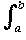
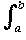

max {|f(x) - g(x)| | x
max {|f(x) - g(x)| | x  [a, b] = d
[a, b] = d (f, g)
(f, g)Integrate over [a, b] to get
d1(f, g) =  |f(x) - g(x)| dx
(b - a)d(f, g).Hence if d
(fn, f) is small, so is d1(fn, f) and so if (fn)  f in d it also converges in d1 .
f in d it also converges in d1 .
|f(x) - g(x)| max {|f(x) - g(x)| | x [a, b] = d(f, g)
Integrate over [a, b] to get
d1(f, g) =  |f(x) - g(x)| dx (b - a)d(f, g).
Hence if d(fn, f) is small, so is d1(fn, f) and so if (fn) f in d it also converges in d1 .